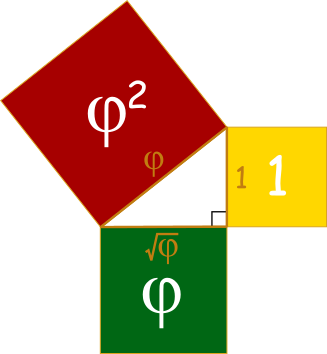

rm(list=ls())
pct <- "0.025"
folder <- "./all0025/"
files <- list.files("all",pattern="F.fq.gz")
for( i in 1:length(files) ) {
file <- files[i]
tmp <- strsplit(file, split="\\.")[[1]]
ofile <- paste( paste(tmp[1],tmp[2],sep=""), tmp[3],tmp[4], sep=".")
cmd <- paste( "seqtk sample ./all/",file," ",
pct, " > ", folder, " ", ofile, sep="")
system(cmd)
cat( format(i/length(files), digits=3), " ", ofile, "\n")
}
There is a necessity to figure out how much of your data you should be using for each step. It is a balancing act where we need to simultaneously:
- Capture as much of the underlying genetic information as we can so that we have a good representation across the species distribution -> more data
- Make sure that the data we are using is conservative enough such that we can have a sufficient level of confidence that what we are working with is actually good data. -> less overall data
- Be able to do the bioinformatics parts in a reasonable timeframe -> smaller data sets
However, it is not always a priori knowable how much of the data to use.
Smaller Subsets
So it appears that taking all the data to make an assembly may be problematic for a few different reasons:
- It will take a shit ton of time (that is technical measure of quantity reserved for only the most important and magnificently large collections of items).
- It may produce a much too many contigs to be generally informative.
So I set up some subsets of the data to see how long it will take to do smaller amounts.
Here some R code that I wrote to just take a fractional subset of the sequences from each individual and, using the program seqtk make a new set of data in a different folder.
Using this, I set up random subsets of the data for:
- 10% of each individuals genome.
- 5% of each individuals genome.
- 2.5% of each individuals genome.